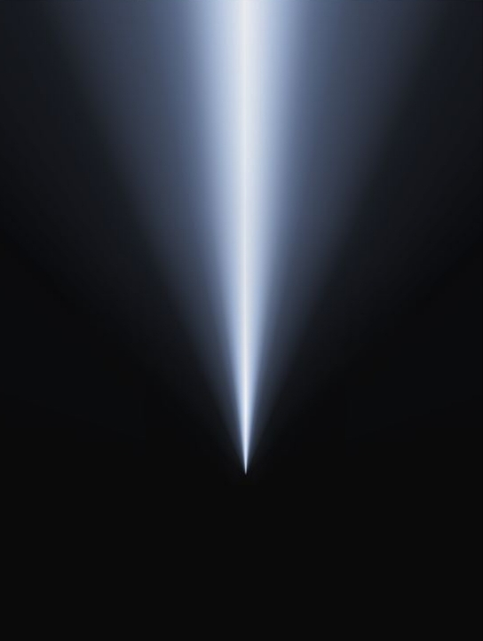

Метод
Метод основан на принципе нейропластичности — способности мозга формировать новые нейронные связи и укреплять существующие. Через специально разработанные упражнения, которые напрямую влияют на функции мозга и нервной системы, NeuroAttention развивает ключевые навыки внимания.

Современная нейронаука рассматривает внимание как функцию, поддерживаемую интеграцией нескольких нейронных систем: ориентирующей, исполнительной и сети бдительности.
Формальные функции внимания — фокус, переключение, распределение
Восприятие тела и пространства — интероцепция и проприоцепция
Самоосознание и саморегуляция через направленное внимание
7 навыков
Способность поддерживать стабильную концентрацию на выбранном объекте — области тела, ощущении или задаче. Снижает отвлекаемость и укрепляет устойчивый фокус.
Зоны мозга: дорсолатеральная префронтальная кора, передняя поясная кора
Способность быстро перенаправлять внимание с одного объекта на другой, управлять вектором восприятия и адаптироваться к изменениям.
Зоны мозга: фронтопариетальные сети, рабочая память
Удержание двух и более точек внимания одновременно. Развивает рабочую память и когнитивную интеграцию.
Зоны мозга: межполушарная координация, мозолистое тело
Переход от «плоского» восприятия тела к объёмному — внутренние полости, мышечные массы, системы органов.
Зоны мозга: островковая кора, поясная кора
Интеграция внутренней карты тела с проприоцептивной картой — осознание положения и движения в пространстве.
Зоны мозга: сенсомоторная кора, мозжечок
Различение типов ощущений — кожа, мышцы, органы, дыхание, сердце. Развивает метакогнитивное осознание.
Зоны мозга: лимбическая система, островковая кора
Осознанное изменение физиологических состояний — снижение стресса, расслабление мышц, регуляция дыхания и сердечного ритма.
Зоны мозга: вегетативная нервная система, блуждающий нерв
Дополнительные модули
Регуляция вегетативной нервной системы через осознанное дыхание
Микромоторная работа, межполушарная координация, снижение напряжения
Активация дыхательных и вибрационных каналов саморегуляции
Пройдите диагностический тест или изучите доступные программы обучения.